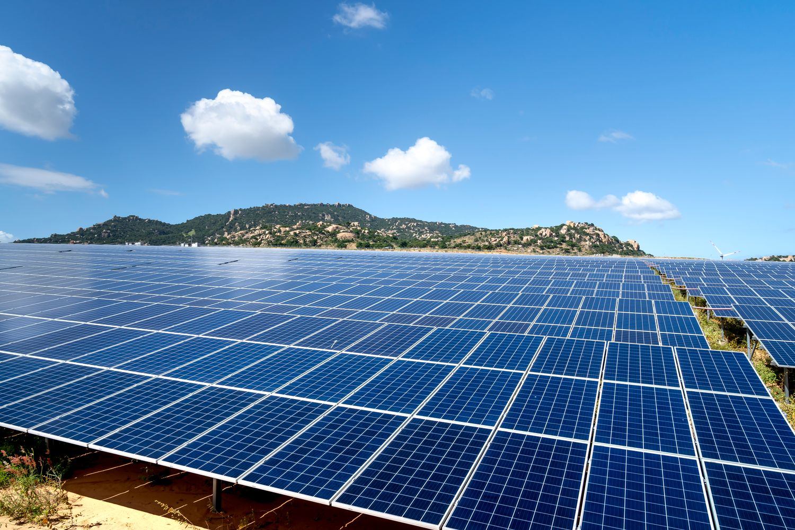

שירותים בטבריה ובצפון
שטיפת פאנלים לתחנות כוח סולאריות
אנחנו שוטפים פאנלים פוטו־וולטאיים בשדות סולאריים ועל גגות מסחריים בצפון ישראל. השירות מיועד למפעילי תחנות, משקים ומנהלי נכסים שמבקשים שטיפה חד־פעמית או סדרת ביקורים.
איך מתכננים את השטיפה?
ממפים את שורות הפאנלים עם מנהל האתר ובודקים גישה למים, מעברים והנחיות יצרן. מתאמים את שיטת השטיפה ואת אזורי העבודה לפני תחילת הביקור.
השירות מיועד למשטחי הפאנלים המייצרים חשמל. הוא אינו כולל תיקוני חשמל או טיפול בקולטי דוד שמש, ואינו מבטיח שיעור מסוים של עלייה בתפוקה.
סדר גודל של מחיר
מדריכי מחירים בישראל מציינים כ־7–9 ₪ לפני מע״מ לשטיפה לכל קילוואט מותקן במערכת מסחרית. לדוגמה, למערכת של 100 קילוואט מתקבל אומדן של 700–900 ₪ לפני מע״מ לביקור אחד.
זו דוגמת שוק, לא הצעה מחייבת. לחווה גדולה או לחוזה עונתי מכינים הצעה פרטנית לפי פריסת השורות, נגישות, אספקת מים, מצב הפאנלים ותדירות הביקורים.
מקורות למחירי השוק: Midrag · SunLinkמה לשלוח להצעת מחיר
שלחו מיקום, הספק מותקן בקילוואט או מספר פאנלים, ציינו אם זו מערכת קרקעית או גג ואם יש נקודת מים. צרפו צילום כללי ואת מועד השטיפה הרצוי.